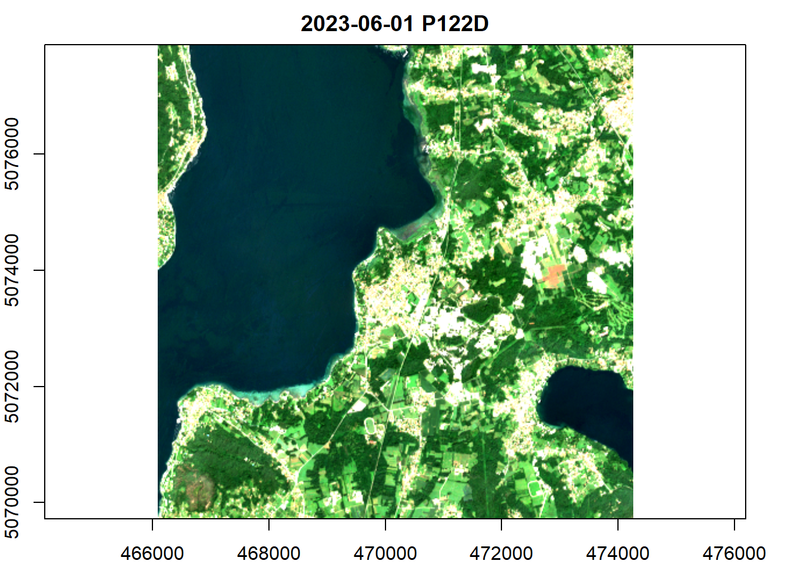
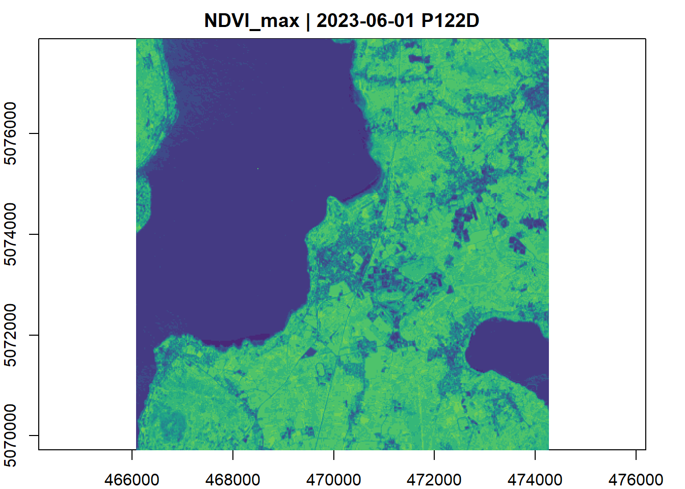
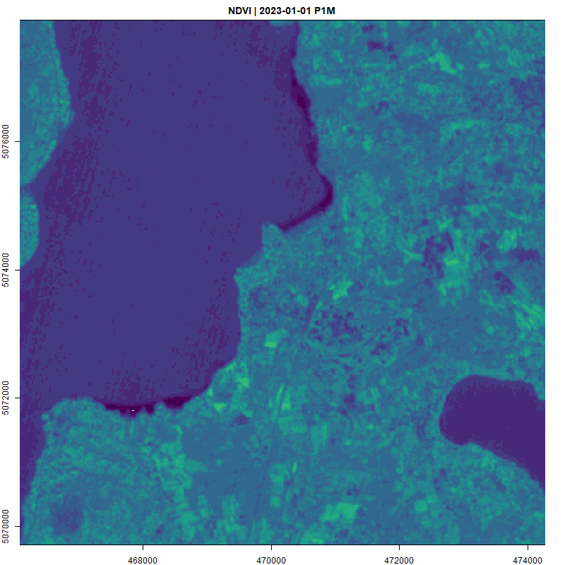

library(rstac)
library(gdalcubes)
library(stars)
library(sf)S2 cube using rstac and gdalcube
Prepare stac request
Access Planetary Computer STAC API and prepare the request for S2 images collection.
ispra <- c(8.616105, 45.8171) #lat long Ispra, starting point of a click event in shiny
ispra <- ispra |> st_point() |> st_sfc(crs = 4326) |> st_buffer(4000) |> st_bbox()
planetary_computer <- stac("https://planetarycomputer.microsoft.com/api/stac/v1")
items <- planetary_computer |>
stac_search(collections = "sentinel-2-l2a",
bbox = ispra[1:4],
datetime = "2023-01-01/2023-12-31",
limit = 500) |>
post_request()
items <- items_sign(
items,
sign_planetary_computer()
)
items###Items
- features (145 item(s)):
- S2B_MSIL2A_20231230T103349_R108_T32TMR_20231230T132329
- S2B_MSIL2A_20231227T102339_R065_T32TMR_20231227T133603
- S2A_MSIL2A_20231225T103441_R108_T32TMR_20231225T150959
- S2A_MSIL2A_20231222T102431_R065_T32TMR_20231222T152119
- S2B_MSIL2A_20231220T103349_R108_T32TMR_20231222T015919
- S2B_MSIL2A_20231217T102339_R065_T32TMR_20231220T065936
- S2A_MSIL2A_20231215T103431_R108_T32TMR_20231220T002623
- S2A_MSIL2A_20231212T102421_R065_T32TMR_20231213T043920
- S2B_MSIL2A_20231210T103329_R108_T32TMR_20231210T144713
- S2B_MSIL2A_20231207T102319_R065_T32TMR_20231207T144735
- ... with 135 more feature(s).
- assets:
AOT, B01, B02, B03, B04, B05, B06, B07, B08, B09, B11, B12, B8A, datastrip-metadata, granule-metadata, inspire-metadata, preview, product-metadata, rendered_preview, safe-manifest, SCL, tilejson, visual, WVP
- item's fields:
assets, bbox, collection, geometry, id, links, properties, stac_extensions, stac_version, typeData cube proxy object using gdalcube
Create an image collection from all images with less than 20% clouds.
assets = c("B01","B02","B03","B04","B05","B06", "B07","B08","B8A","B09","B11","SCL")
clt <- items$features |>
stac_image_collection(asset_names = assets,
property_filter = function(x) {x[["eo:cloud_cover"]] < 20})Create a data cube proxy object by defining
crs
bbox
time period and steps
methods to aggregate time dimension
method to spatially resample values
crs <- "EPSG:32632" #target crs, to discuss
bb_utm32N <- ispra |> st_bbox(crs = 4326) |> st_as_sfc() |> st_transform(crs) |> st_bbox(crs = crs)
v = cube_view(srs = crs,
extent = list(t0 = "2023-06-01", t1 = "2023-09-30", # vegetation period
left = bb_utm32N["xmin"], right = bb_utm32N["xmax"],
top = bb_utm32N["ymax"], bottom = bb_utm32N["ymin"]
# set Ispra extent
),
dx = 20, dy = 20, dt = "P1D", # res 20m, time dimension unit: 1 day
aggregation = "median", # no effect as we keep all observation
resampling = "average") # strategy to discuss
S2.mask = image_mask("SCL", values=c(3,8,9)) # clouds and cloud shadows
S2cube <- raster_cube(clt, v, mask = S2.mask)It is also possible to filter the cube using a polygon with filter_geom. Useful if we decide to keep only values in a plot around a clicked location.
Reduce time for RGB bands
Here we compute the median of RGB bands values for summer 2023 (4 months). In the plot title, P122D stands for 122 days.
gdalcubes_options(parallel = 8)
S2cube |>
select_bands(c("B02","B03","B04")) |>
reduce_time(c("median(B02)", "median(B03)", "median(B04)")) |>
plot(rgb = 3:1)
Max NDVI of the season
Here we calculate the NDVI for all images and determine its maximum value.
S2cube <- raster_cube(clt, v, mask = S2.mask)
gdalcubes_options(parallel = 8)
max_ndvi_mosaic <- S2cube |>
select_bands(c("B04", "B08")) |>
apply_pixel(c("(B08-B04)/(B08+B04)"), names="NDVI") |>
reduce_time("max(NDVI)") |>
plot(nbreaks = 20, zlim = c(-0.2,1), col = viridis::viridis(19))
Monthly animation of NDVI - Full year 2023
We generate a new proxy cube for the full year 2023 with the time dimension aggregated by month (median).
v = cube_view(srs = crs,
extent = list(t0 = "2023-01-01", t1 = "2023-12-31",
left = bb_utm32N["xmin"], right = bb_utm32N["xmax"],
top = bb_utm32N["ymax"], bottom = bb_utm32N["ymin"]
),
dx = 20, dy = 20, dt = "P1M",
aggregation = "median",
resampling = "average")
S2cube <- raster_cube(clt, v, mask = S2.mask)Let’s calculate the NDVI by month and create a gif animation of the NDVI time series
S2cube |>
select_bands(c("B04", "B08")) |>
apply_pixel(c("(B08-B04)/(B08+B04)"), names="NDVI") |>
animate(nbreaks = 20, zlim = c(-0.2,1), col = viridis::viridis(19), save_as = "anim.gif")
Get pixel values as dataframe
We can convert the data cube into a dataframe.
S2cube <- raster_cube(clt, v, mask = S2.mask)
pixels <- S2cube |> as.data.frame(complete_only = TRUE)
head(pixels) B01 B02 B03 B04 B05 B06 B07 B08
1 1105.000 1243.227 1296.336 1387.902 1635.581 2009.511 2215.827 2352.969
2 1105.000 1202.292 1233.262 1317.486 1458.372 1685.323 1768.934 2007.825
3 1104.468 1187.096 1207.310 1290.614 1430.024 1552.675 1666.720 1828.081
4 1097.000 1189.850 1211.625 1302.233 1443.318 1575.881 1671.147 1838.780
5 1097.000 1204.927 1241.172 1344.304 1506.399 1695.595 1822.424 1970.160
6 1098.364 1207.240 1250.452 1354.643 1488.801 1695.496 1858.682 2022.874
B09 B11 B8A SCL
1 2083.000 2363.820 2471.074 5
2 2083.000 2141.765 1980.895 5
3 2074.251 2024.326 1838.415 5
4 1951.500 2053.496 1806.144 5
5 1951.500 2213.718 1998.187 5
6 1969.563 2276.648 2032.859 5